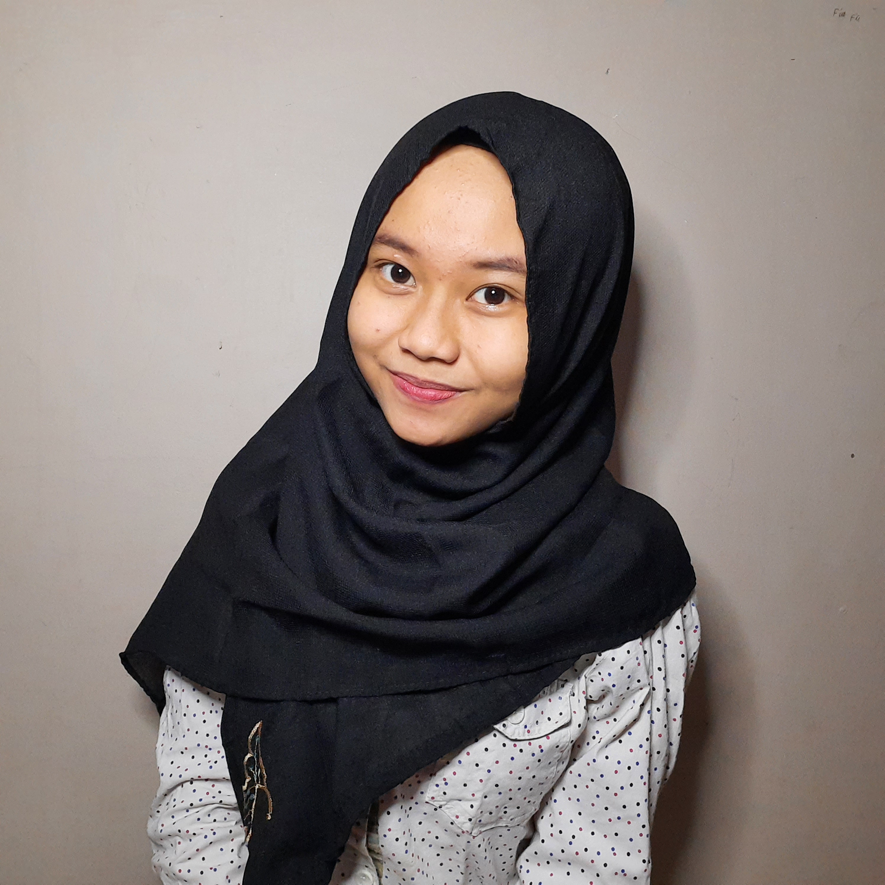

Alifia Farahh

Tentang Saya
Saya alifia farah helmia, saya berumur 21 tahun dan saya masih menjadi mahasiwi aktif di Universitas Pendidikan Indonesia kampus daerah di serang dari jurusan Pendidikan kelautan dan perikanan. Saya memasuki semester 7 dan sedang mengikuti Studi Independent Bersertifikat di SEAL.
Pendidikan
09.2019-Sekarang Undergraduate Student in Marine and Fisheries Education Universitas Pendidikan Indonesia, Bandung, Indonesia.
GPA:3.67/4.00 (127 of 144 Credits).
07.2016-06.2019 High School Student in Mathematics and Natural Science Senior High School 3 Kuningan, West Java, Indonesia.
Awardee to received a Universitas Pendidikan Indonesia by report card value (SNM-PTN).
Selengkapnya tentang Alifia
Bisa diakses melalui
bit.ly/resumealifiafarahh
Sosial Media
Terimakasih, Senang bertemu dengan anda.